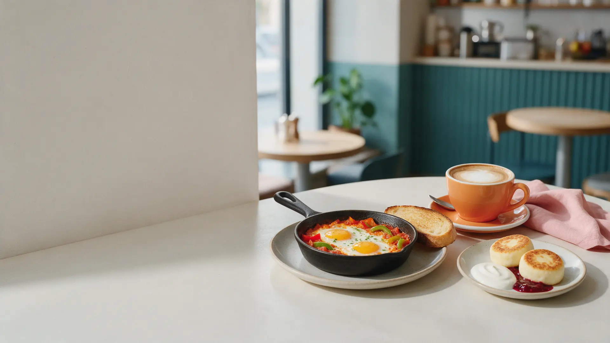
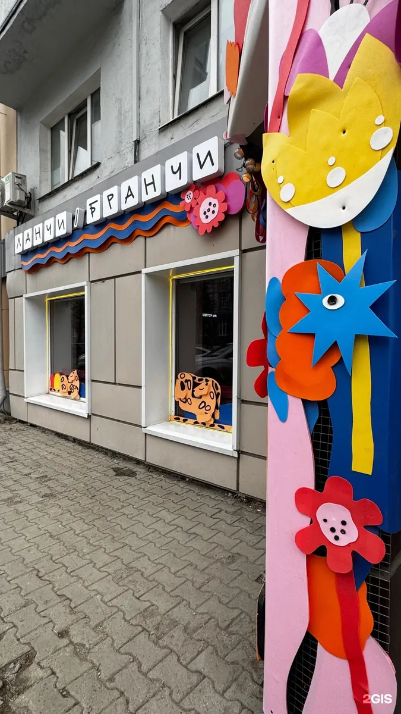
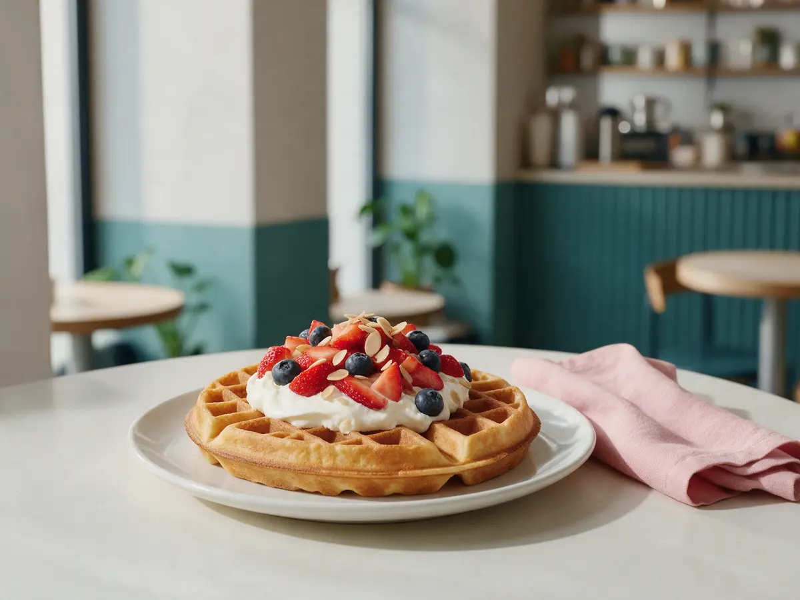
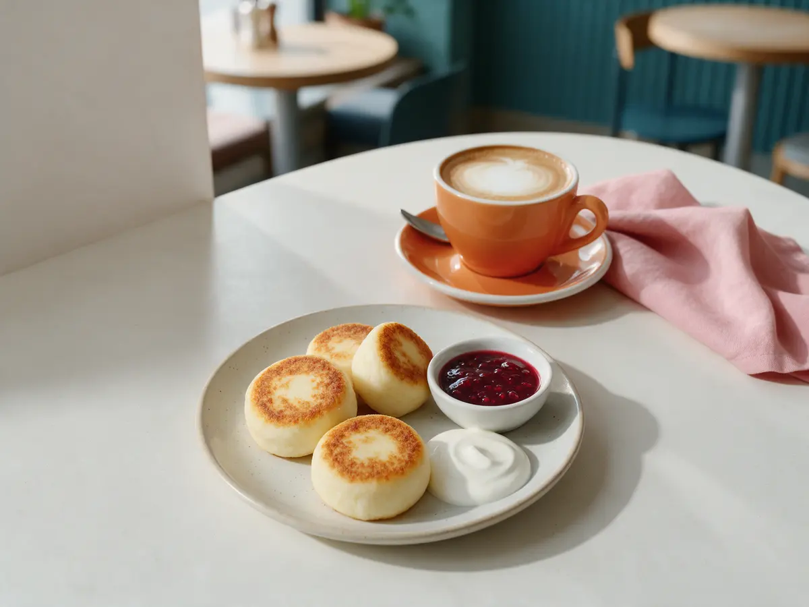

Бистро на Екатерининской, 96 · завтраки до 14:00
Завтраки и ланчи в центре Перми
Шакшука, сырники, драники и вафли, кофе и авторские лимонады. Забронируйте столик заранее – в зале всего 12 столов.
- 5,0 в 2ГИС – почти 6 000 оценок
- Завтраки с 9 до 14
- Можно с собакой

Что удобно знать заранее
Входит
- Завтраки подаём с 9 до 14 часов
- Можно прийти с собакой – нальём воды
- Можно поработать с ноутбуком, есть Wi-Fi
- Еда и кофе навынос
Отдельно, если нужно
- Доставки нет
- В зале 12 столов – в выходные лучше бронировать
Что у нас в меню
Цены из меню на Яндекс.Картах, октябрь 2026. Полное меню – больше 80 позиций.
Завтраки
- Шакшукадва яйца в томатном соусе с болгарским перцем, с хлебом520 ₽
- Сырникис кремчизом, сметаной или вареньем на выбор450 ₽
- Плотный завтракскрембл, сосиски, бекон, фасоль, драники680 ₽
- Завтрак с лососем и вафлейскрембл, шпинат, черри, лосось, авокадо720 ₽
- Бабулины оладьисо сгущёнкой, сметаной или малиновым вареньем320 ₽
- Каша рисовая или овсянаяна молоке, на воде или альтернативном280 ₽
Ланчи и горячее
- Драники с ростбифом и трюфельным муссом690 ₽
- Хрустящий шницельс пюре и пармезаном590 ₽
- Тыквенный суп с креветками480 ₽
- Чизбургер с картошкой фри690 ₽
- Булгур с цыплёнком в сладком чили590 ₽
Сладкое и напитки
- Вафля с клубникой, голубикой и ванильным кремом560 ₽
- Блины с бананом, шоколадом и мороженым460 ₽
- Капучино 300 мл290 ₽
- Раф груша-лаванда360 ₽
- Лимонад манго-лайм320 ₽
- Чай Брусника-ежевика-хвоя700 мл420 ₽
Цены и наличие уточняйте у официантов.
Как забронировать столик
- 01
День и время
Выберите, когда придёте: на завтрак, ланч или ужин.
- 02
Сколько вас
Напишите, сколько гостей и есть ли повод – день рождения, встреча.
- 03
Подтверждение
Ответим в Telegram и подтвердим столик.
- 04
Приходите
Екатерининская, 96 – столик будет ждать вас.



За что нас любят гости
Завтраки как главное блюдо
Шакшука, драники, кабачковые оладьи, сырники и вафли – не одна яичница на выбор.
Быстро даже при полной посадке
Так пишут гости в отзывах на Картах.
Можно с питомцем
Собакам наливают воды, а гостям приносят воду бесплатно.
Центр города
Рядом с политехом и гостиницами – удобно перед работой или прогулкой.
Отзывы с Яндекс.Карт
«Одно из лучших (если вообще не лучшее) место для завтраков в Перми!»
Илья Антошко · 3 июля 2026
«Нам настолько понравились драники с ростбифом, что заказали вторую порцию. Цены приятные, персонал вежлив.»
Kristina Zharaya · 4 апреля 2026
«Несмотря на полную посадку, блюда приносят быстро.»
Александра · 17 июля 2026
Отзывы с карточки на Яндекс.Картах, без правок.
Частые вопросы
До скольки завтраки?
Завтраки подаём с 9 до 14 часов, в воскресенье кафе открывается в 10.
Можно забронировать столик?
Да, напишите день, время и сколько вас – подтвердим в Telegram.
Можно прийти с собакой?
Да, с животными можно.
Есть подарочные сертификаты?
Да, подарочный сертификат можно купить в кафе.
Выберите день – столик будет ждать
- Адрес
- Пермь, Екатерининская улица, 96
- Часы
- Пн-сб 09:00-21:00, вс 10:00-21:00
- Телефон
- +7 (922) 310-07-70